Give a high-level overview of what you implemented in this homework. Think about what you've built as a whole. Share your thoughts on what interesting things you've learned from completing the homework.
Section I: Bezier Curves and Surfaces
Part 1: Bezier curves with 1D de Casteljau subdivision
Casteljiau’s algorithm is a recursive method used to evaluate and construct Bezier curves. The algorithm interpolates between control points and repeatedly interpolates on the results. This recursive process continues until there is only one point left. That point on the bezier curve corresponds to the position of the curve at a given parameter value t.
Approach/Implementation: For this part, I implemented one step of Casteljiau’s algorithm to evaluate Bezier curves at some given parameter value t. The function BezierCurve::evaluateStep takes a vector of 2D control points and calculates a new set of intermediate control points by linearly interpolating between each adjacent point. My implementation iterated through the input vector and computed the interpolated point for each neighboring pair; the results were stored in a new vector. The function returns this new vector. Each call to the function performs one step of interpolation, reducing the number of points by one. The last call to the function eventually gives a single point on the Bezier curve at parameter t.
Issues: One issue I encountered was my program erroring because I was iterating through the entire input vector. This was wrong because I was indexing outside of the actual vector when the loop got to the last element in the vector. I fixed this by stopping the loop 1 element before the last element of the vector.
Below are snapshots of each step of the evalution from original control poinst down to final evaluated point of a Bezier curve with 6 control points.
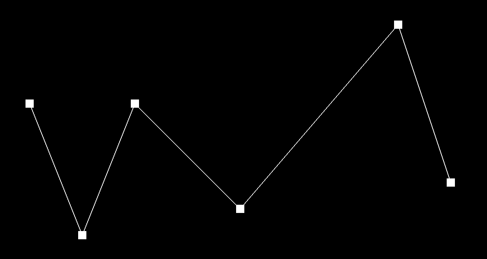
Original control points.
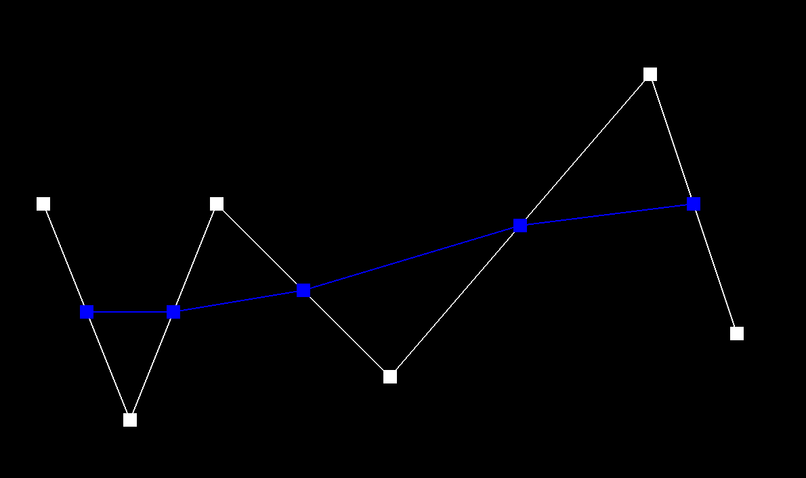
First step.
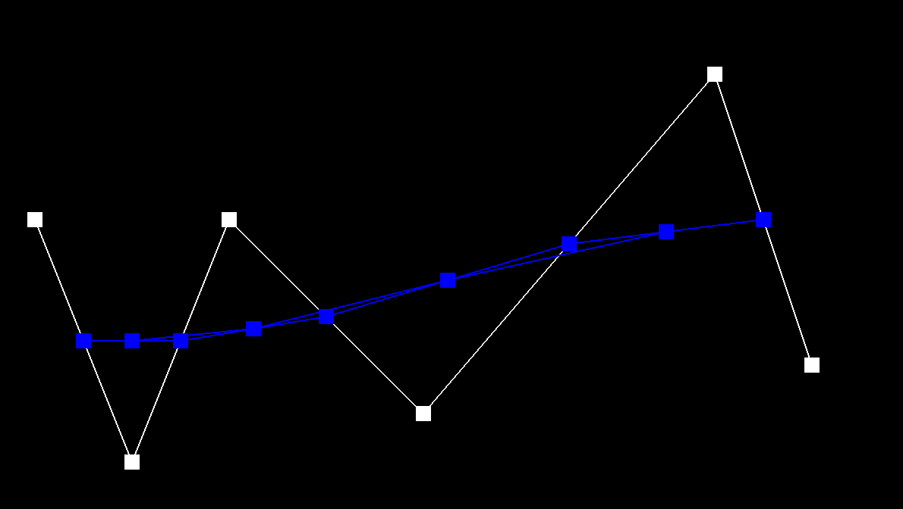
Second step.
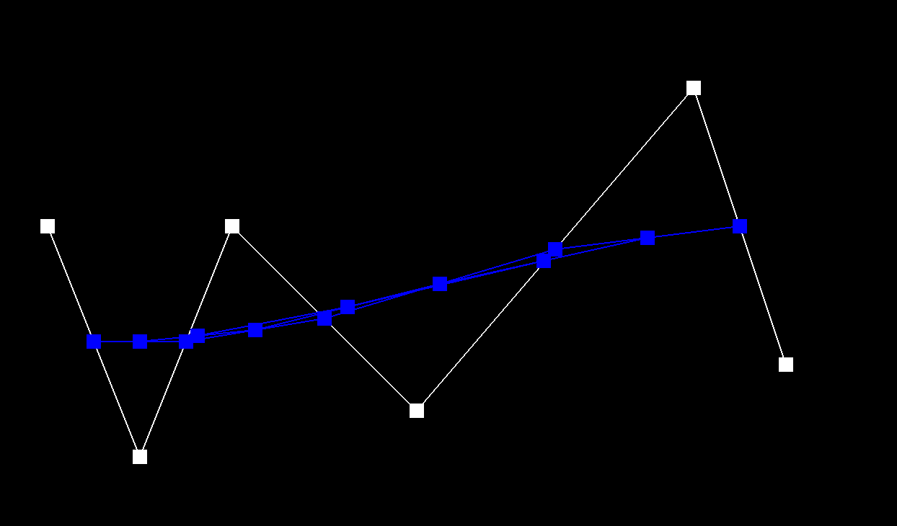
Third step.
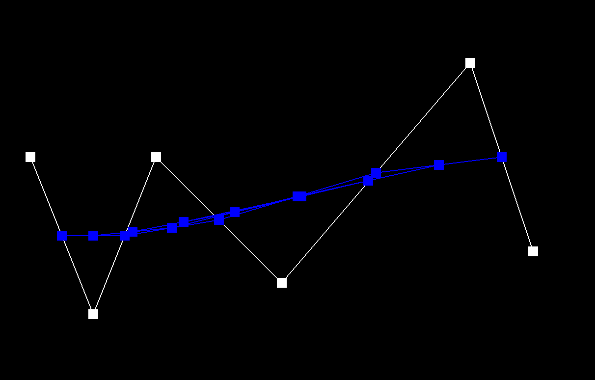
Fourth step.
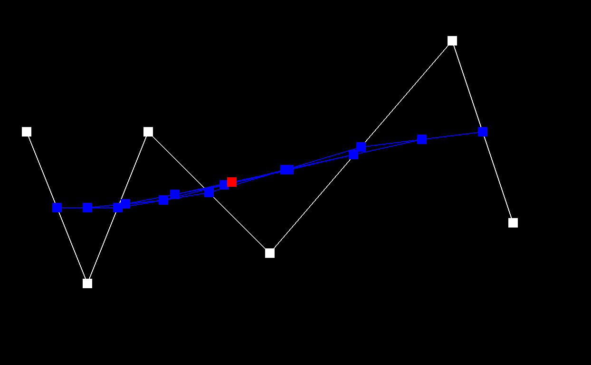
Final evaluated point.
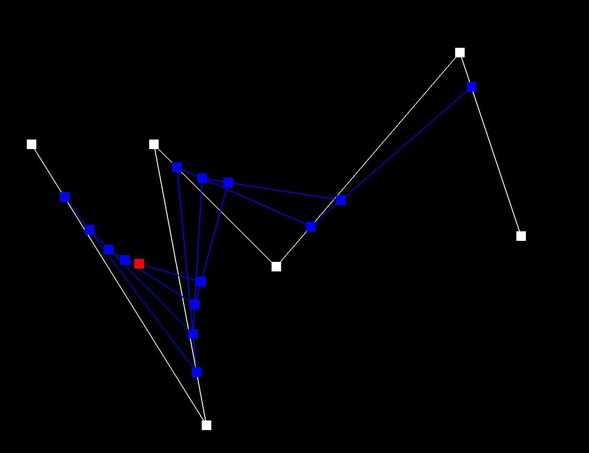
Snapshot of a Bezier Curve with modified parameter t and different control points.
Part 2: Bezier surfaces with separable 1D de Casteljau
Casteljiau’s algorithm extends from Bezier curves to Bezier surfaces by applying the same 1D interpolation in both directions. For a Bezier surface, the control points are arranged in a 2D grid rather than just a line. The goal is to evaluate a point on the surface at two parameters (u, v) rather than just 1 parameter t. You treat each row of control points as its own Bezier curve problem and apply Casteljiau with parameter u. This produces a set of new intermediate points which forms another 1D Bezier curve which is evaluated again using Casteljiau’s with parameter value v. The result is a single point that lies on the Bezier surface. In my implementation, I reused the same interpolation logic from part 1 on a Vector3D object in BezierPatch::evaluateStep. BezierPatch::evaluate1D repeatedly calls evaluateStep to get the last remaining point. Finally, BezierPatch::evaluate(u, v) uses evaluate1D to find the position on the Bezier surface at (u, v).
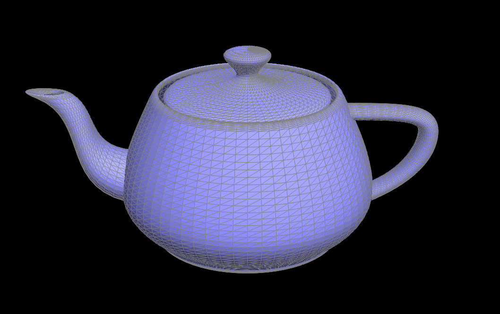
Snapshot of teapot.
Section II: Triangle Meshes and Half-Edge Data Structure
Part 3: Area-weighted vertex normals
The goal of part 3 is to achieve smooth shading across a given mesh. Prior to part 3, each triangle was shaded separately which resulted in a sort of blocky and unrealistic look. To achieve smooth shading, we compute a normal vector at each vertex through averaging the normals of all the triangles that touch that specific vertex. Vertex::normal, the function implemented in this part, returns an approximate unit normal given some vertex. To implement this, I used the half-edge structure to “walk” around all the faces connected to the given vertex. For each triangle touching the vertex, I compute the face normal by the cross product of two edges. I then weight this calculated normal by the triangle’s area, sum all these normals together, and normalize the summed result. The final result is the return value of Vertex::normal. I ran into some issues with treating iterators like pointers. For example, I tried to do boolean checks with iterators, like you can with booleands, which did not work as iterators aren’t nullable. As a result, I had to remove any boolean checks with iterators and simply use the iterator’s methods.
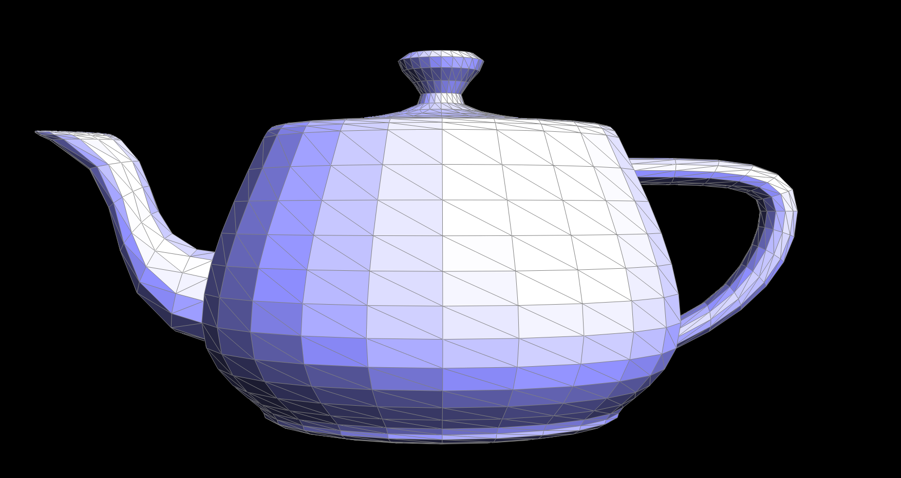
Teapot shading without vertex normal.
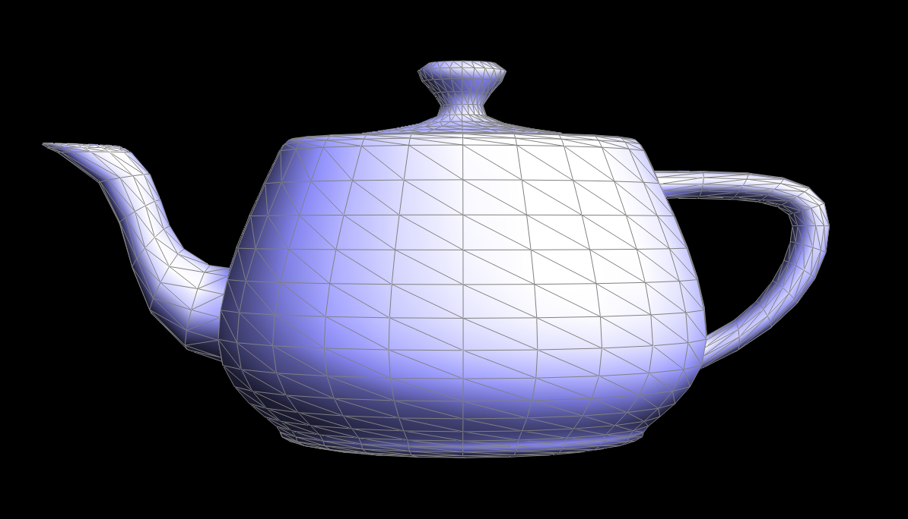
Teapot shading with vertex normal.
Part 4: Edge flip
My approach for implementing edge flips is as follows. Given some valid edge - cannot flip boundary edges - I identified the 4 vertices, 2 faces, and 6 halfedges belonging to the two adjacent triangles connected by the given edge. I then flipped the edge by rewiring the edge to the 2 other vertices that were not connected by the original given edge. Issues: An issue I ran into was only updating the flipped edge and ignoring all surrounding connectivity. Because of this, the other halfedges belonging to the two adjacent triangles still referenced the old configuration. This led to program crashes when the program attempted to follow incorrect pointers as well as incorrect traversals. To fix this, I had to completely revamp the local connectivities. All 6 of the halfedges and their next, vertex, edge, and face pointers had to reflect the new configuration of the triangles after the edge flip.
The snapshots below showcase results of edge flips on teapot image.
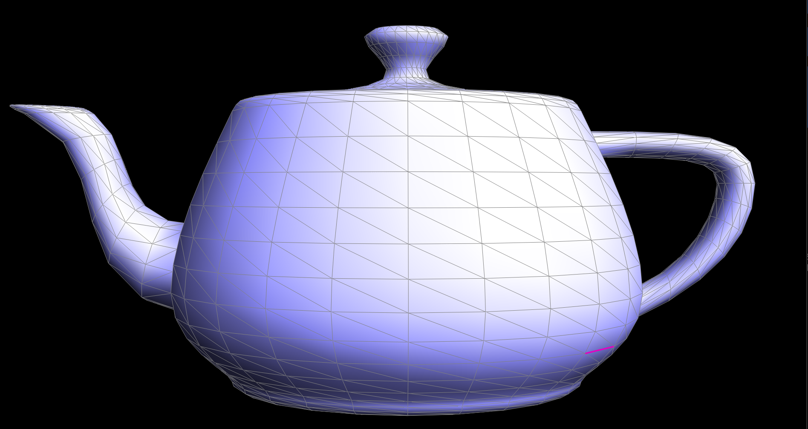
Original image.
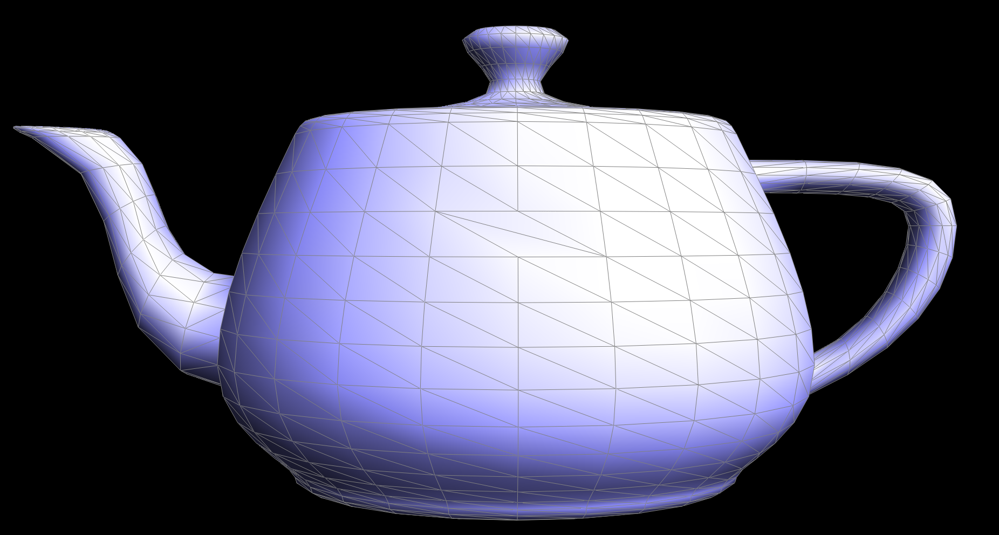
After one flip.
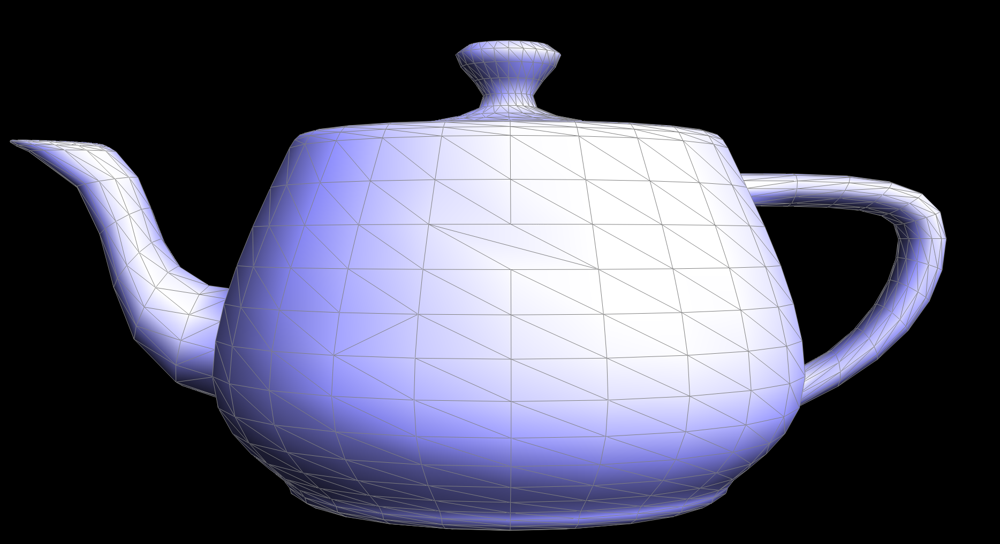
Another flip.
Part 5: Edge split
My approach for implementing edge flips is as follows. Given some valid edge - cannot flip boundary edges - I identified the 4 vertices, 2 faces, and 6 halfedges belonging to the two adjacent triangles connected by the given edge. I then created the new mesh elements to complete the split. These new elements included a new vertex (which was placed at the midpoint of the given edge), 3 new edges, 2 new faces, and 6 new halfedges. The original edge was reused as one of the 2 edges connected by the new midpoint vertex. I then rewired the connectivity so that the 2 original triangles connected by the given edge were replaced by 4 smaller triangles. This involved reassigning next pointers so that each of the 4 new faces form a correct 3-halfedge cycle, updating vertex pointers so they point from correct source vertex, and tweaking face and edge pointers so that each halfedge belonged to the correct face and each halfedge pair referenced the right edge.
Because edge split introduces new mesh elements, I ended up leaving some pointers incorrectly assigned. I was able to use check_for to verify the correct halfedges pointed to the newly created midpoint vertex. I also used check_for to ensure that only 2 halfedges were associated with each edge.
The snapshots below showcase results of both edge splits and edge flips on teapot image.
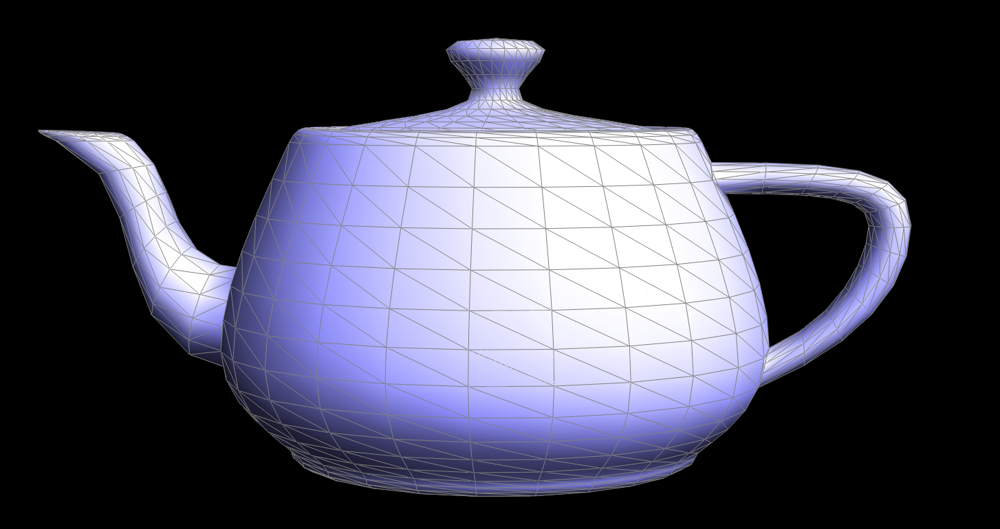
Original image.
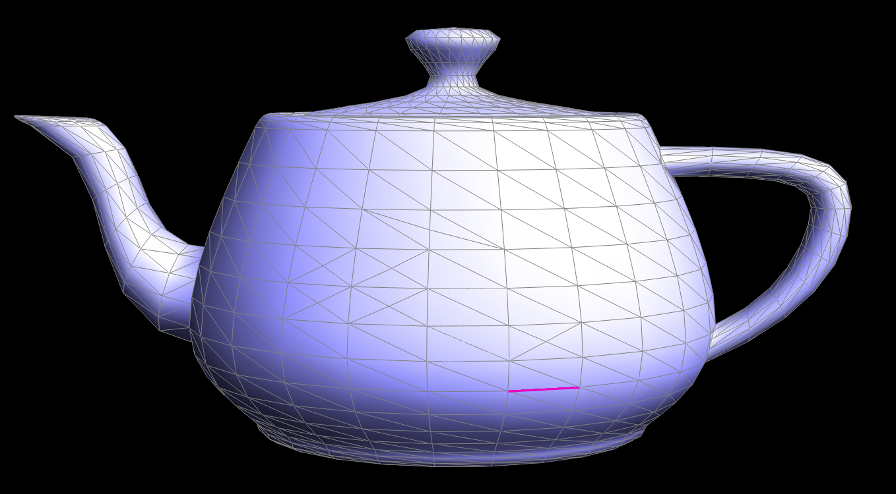
Edge splits.
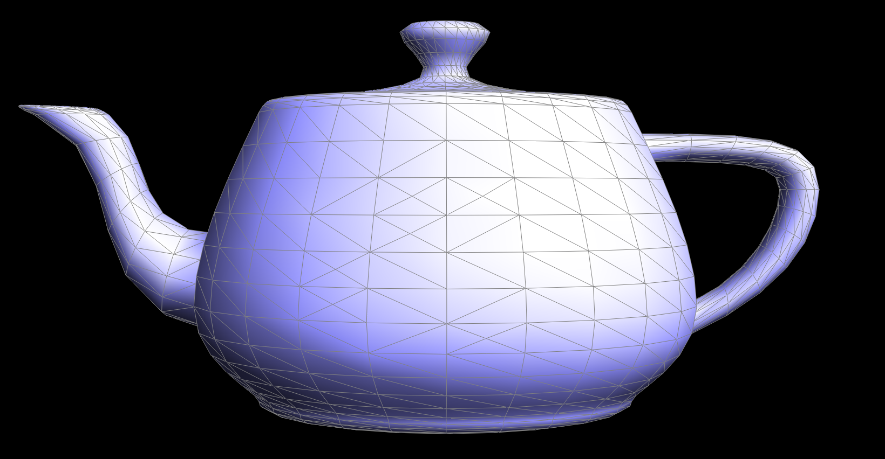
Edge splits and edge flips.
Part 6: Loop subdivision for mesh upsampling
My implementation for part 6 loop subdivision follows 2 phases: computing targets and then changing the mesh. For each original vertex, I walk around its one-ring with halfedges. I compute a weighted average by counting each vertex’s neighboring vertices and summing their positions. This value is stored in Vertex::newPosition. I then compute the midpoint target for each original edge from the edge’s two endpoints plus the two opposite triangle vertices. I use the following formula for this step:
\( 3/8 * (A + B) + 1/8 * (C + D) \)
Before splitting, I saved the original edge iterators in a vector. This was a crucial step because calling splitEdge adds new edges. I then split each edge in this vector of original edges. After splitting each edge, the newly created vertex’s newPosition value is set to the precomputed midpoint target. This new vertex is also marked as new. I then flip only edges that connect an old and a new vertex. Finally, every vertex’s position is set to the value previously stored in Vertex::newPosition.
Debugging/Issues: The largest issue I ran into was splitEdge creating new edges and changing connectivity. This possibly led to newly created edges getting revisited and being split again. This is why I introduced the vector of original vectors. This way, I could iterate through this vector and ensure that there is exactly one split for each original edge.
Mesh behavior after loop subdivision: I noticed that loop subdivision will force sharp corners and edges to get rounded off after upsampling. Take for instance the series of subdivisions below.
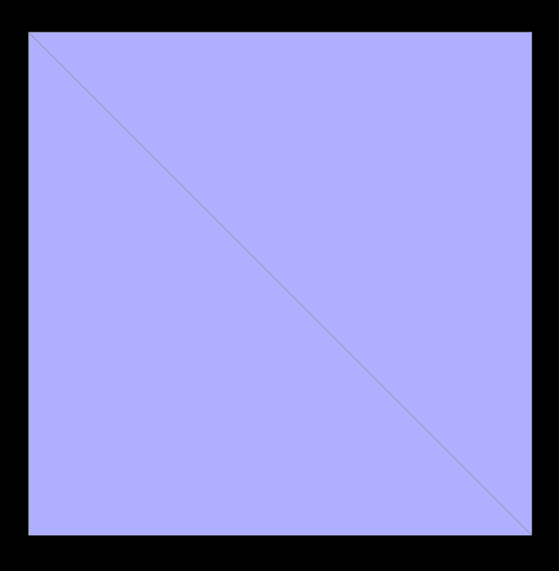
Original image.
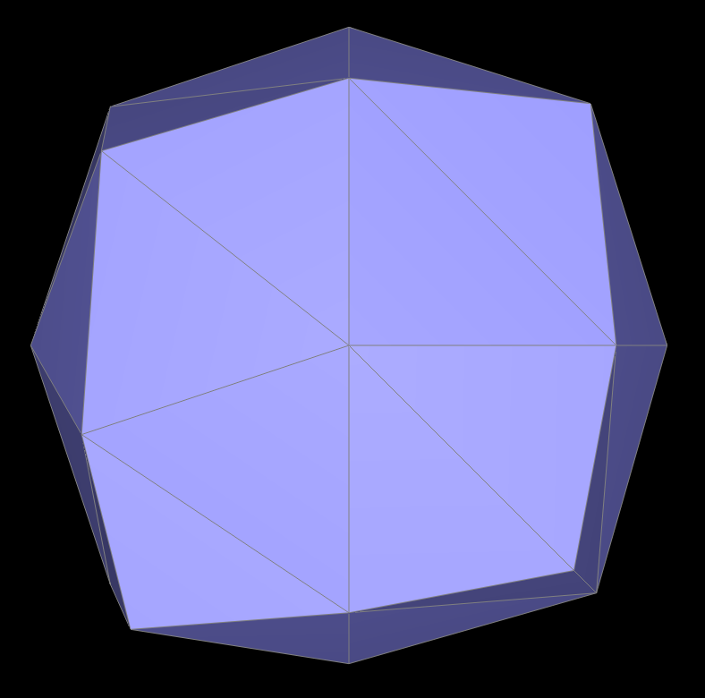
After subdivision.
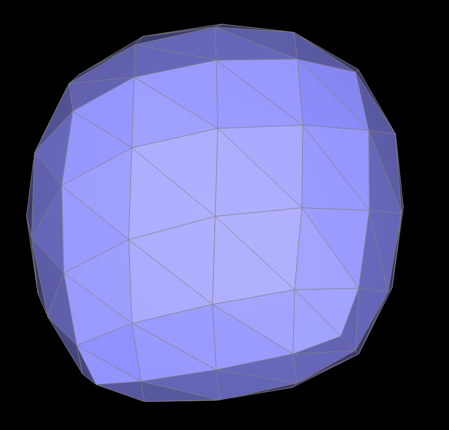
After another subdivision.
I was able to reduce this by pre-splitting some of the edges. Below, I add a bunch of edges to the top left half of the original square. I find that adding supporting edges near edges or sharp corners can help preserve the original shape a bit longer.